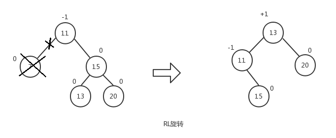

原文连接:https://www.cnblogs.com/jaxu/p/11309385.html
在计算机科学中，树是一种十分重要的数据结构。树被描述为一种分层数据抽象模型，常用来描述数据间的层级关系和组织结构。树也是一种非顺序的数据结构。下图展示了树的定义：
在介绍如何用JavaScript实现树之前，我们先介绍一些和树相关的术语。
如上图所示，一棵完整的树包含一个位于树顶部的节点，称之为根节点（11），它没有父节点。树中的每一个元素都叫做一个节点，节点分为内部节点（图中显示为黄色的节点）和外部节点（图中显示为灰色的节点），至少有一个子节点的节点称为内部节点，没有子元素的节点称为外部节点或叶子节点。一个节点可以有祖先（根节点除外）和后代。子树由节点本身和它的后代组成，如上图中三角虚框中的部分就是一棵子树。节点拥有的子树的个数称之为节点的度，如上图中除叶子节点的度为0外，其余节点的度都为2。从根节点开始，根为第1层，第一级子节点为第2层，第二级子节点为第3层，以此类推。树的高度（深度）由树中节点的最大层级决定（上图中树的高度为4）。
在一棵树中，具有相同父节点的一组节点称为兄弟节点，如上图中的3和6、5和9等都是兄弟节点。
二叉树
二叉树中的节点最多只能有两个子节点，一个是左子节点，一个是右子节点。左右子节点的顺序不能颠倒。因此，二叉树中不存在度大于2的节点。
二叉搜索树（BST——Binary Search Tree）是二叉树的一种，它规定在左子节点上存储小（比父节点）的值，在右子节点上（比父节点）存储大（或等于）的值。上图就是一个二叉搜索树。
下面我们重点来看一下二叉搜索树的实现。
根据二叉树的描述，一个节点最多只有两个子节点，我们可以使用《JavaScript数据结构——链表的实现与应用》一文中的双向链表来实现二叉搜索树中的每一个节点。下面是二叉搜索树的数据结构示意图：
以下是我们要实现的BinarySearchTree类的骨架部分：
class BinarySearchTree {
constructor () {
this.root = null;
}
// 向树中插入一个节点
insert (key) {}
// 在树中查找一个节点
search (key) {}
// 通过中序遍历方式遍历树中的所有节点
inOrderTraverse () {}
// 通过先序遍历方式遍历树中的所有节点
preOrderTraverse () {}
// 通过后序遍历方式遍历树中的所有节点
postOrderTraverse () {}
// 返回树中的最小节点
min () {}
// 返回树中的最大节点
max () {}
// 从树中移除一个节点
remove (key) {}
}先来看看向树中添加一个节点。我们借用《JavaScript数据结构——链表的实现与应用》一文中的双向链表DoubleLinkedList类来模拟树中的节点，在DoubleLinkedList类中，每一个节点有三个属性：element、next和prev。我们在这里用element表示树中节点的key，用next表示树中节点的右子节点（right），用prev表示树中节点的左子节点（left）。
insert (key) {
let newNode = new Node(key);
if (this.root === null) this.root = newNode;
else insertNode(this.root, newNode);
}当树的root为null时，表示树为空，这时直接将新添加的节点作为树的根节点。否则，我们需要借助于私有函数insertNode()来完成节点的添加。在insertNode()函数中，我们需要根据新添加节点的key的大小来递归查找树的左侧子节点或者右侧子节点，因为根据我们的二叉搜索树的定义，值小的节点永远保存在左侧子节点上，值大的节点（包括值相等的情况）永远保存在右侧子节点上。下面是insertNode()函数的实现代码：
let insertNode = function (node, newNode) {
if (newNode.element < node.element) {
if (node.prev === null) node.prev = newNode;
else insertNode(node.prev, newNode);
}
else {
if (node.next === null) node.next = newNode;
else insertNode(node.next, newNode);
}
};所有新节点只能作为叶子节点被添加到树中。在本文一开始给出的树的结构图中，如果要添加节点2，对应的操作步骤如下：
我们传入树的根节点，依次进行递归，找到对应的叶子节点，然后修改节点的prev（左子节点）或next（右子节点）指针，使其指向新添加的节点。在上例中，如果要添加节点4，它对应的位置应该是节点3的右子节点，因为4比3大。如果要添加节点21，对应的位置应该是节点25的左子节点......
下面我们来看看树的三种遍历方式：
- 前序遍历（NLR——Preorder Traversal）也叫先序遍历，访问根节点的操作发生在遍历其左右子树之前。
- 中序遍历（LNR——Inorder Traversal），访问根节点的操作发生在遍历其左右子树之间。
- 后序遍历（LRN——Postorder Traversal），访问根节点的操作发生在遍历其左右子树之后。
下面的三个方法对应树的三种遍历方式：
// 前序遍历
let preOrderTraverseNode = function (node, callback) {
if (node !== null) {
callback(node.element);
preOrderTraverseNode(node.prev, callback);
preOrderTraverseNode(node.next, callback);
}
};
// 中序遍历
let inOrderTraverseNode = function (node, callback) {
if (node !== null) {
inOrderTraverseNode(node.prev, callback);
callback(node.element);
inOrderTraverseNode(node.next, callback);
}
};
// 后续遍历
let postOrderTraverseNode = function (node, callback) {
if (node !== null) {
postOrderTraverseNode(node.prev, callback);
postOrderTraverseNode(node.next, callback);
callback(node.element);
}
};可以看到，这三个函数的内容很相似，只是调整了左右子树和根节点的遍历顺序。这里的callback是一个回调函数，可以传入任何你想执行的函数，这里我们传入的函数内容是打印树的节点的key值。我们将BinarySearchTree类的这三个遍历方法的内容补充完整：
preOrderTraverse (callback) {
preOrderTraverseNode(this.root, callback);
}
inOrderTraverse (callback) {
inOrderTraverseNode(this.root, callback);
}
postOrderTraverse (callback) {
postOrderTraverseNode(this.root, callback);
}为了构建本文一开始的那棵树，我们执行下面的代码，然后测试preOrderTraverse()方法：
let tree = new BinarySearchTree();
tree.insert(11);
tree.insert(7);
tree.insert(15);
tree.insert(5);
tree.insert(9);
tree.insert(13);
tree.insert(20);
tree.insert(3);
tree.insert(6);
tree.insert(8);
tree.insert(10);
tree.insert(12);
tree.insert(14);
tree.insert(18);
tree.insert(25);
tree.preOrderTraverse((value) => console.log(value));注意节点插入的顺序，顺序不同，你可能会得到不一样的树。preOrderTraverse()方法采用ES6的语法传入了一个匿名函数作为参数callback的值，这个匿名函数的主要作用就是打印树中节点的key值，可以对照上面三个遍历树节点的函数中的callback(node.element)语句，这里的callback就是这个匿名函数，node.element就是节点的key值（还记得前面我们说过，借用双向链表类DoubleLinkedList来模拟树的节点吗？）下面是前序遍历的执行结果：
11
7
5
3
6
9
8
10
15
13
12
14
20
18
25我们参照前序遍历的定义，借住下面的示意图来理解整个遍历过程：
在前序遍历函数preOrderTraverseNode()中，先执行callback(node.element)，然后再依次递归左子树和右子树。我们将树的根节点作为第一个节点传入，首先打印的就是根节点11，然后开始遍历左子树，这将依次打印左子树中的所有左子节点，依次是7、5、3。当节点3的prev为null时，递归返回，继续查找节点3的右子节点，此时节点3的next值也为null，于是继续向上返回到节点5，开始遍历节点5的右子节点，于是打印节点6......最终所有的节点就按照这个递归顺序进行遍历。
然后我们再来看看中序遍历的情况。
tree.inOrderTraverse((value) => console.log(value));3
5
6
7
8
9
10
11
12
13
14
15
18
20
25
在中序遍历函数inOrderTraverseNode()中，先递归左子树，然后执行callback(node.element)，最后再递归右子树。同样的，我们将根节点作为第一个节点传入，递归到左子树的最后一个左子节点3，由于节点3的prev为null，所以递归返回，打印节点3，然后继续查找节点3的右子节点，节点3的next值也为null，递归返回到上一层节点5，开始打印节点5，之后再查找节点5的右子节点......最终整棵树按照这个顺序完成遍历。
最后再来看看后序遍历的情况。
tree.postOrderTraverse((value) => console.log(value));3
6
5
8
10
9
7
12
14
13
18
25
20
15
11
在后序遍历函数postOrderTraverseNode()中，先递归左子树，然后再递归右子树，最后执行callback(node.element)。同样的，我们将根节点作为第一个节点传入，递归到左子树的最后一个左子节点3，由于节点3的prev为null，所以递归返回，此时继续查找节点3的右子节点，节点3的next值也为null，递归返回并打印节点3，之后递归返回到上一层节点5，开始查找节点5的右子节点，节点5的右子节点是节点6，由于节点6是叶子节点，所以直接打印节点6，然后递归返回并打印节点5。之后递归再向上返回到节点7并递归节点7的右子节点......按照这个顺序最终完成对整棵树的遍历。
接下来我们再来看看对树的搜索。有三种要经常执行的搜索方式：
- 搜索树中的最小值
- 搜索树中的最大值
- 搜索树中的特定值
搜索树中的最小值和最大值比较简单，由于我们的二叉搜索树规定了值小的节点永远在左子树（左子节点）中，值大（或相等）的节点永远在右子树（右子节点）中，所以，搜索最大值我们只需要递归查找树的右子树直到叶子节点，就能找到值最大的节点。搜索最小值只需要递归查找树的左子树直到叶子节点，就能找到值最小的节点。下面是这两个函数的实现：
let minNode = function (node) {
if (node === null) return null;
while (node && node.prev !== null) {
node = node.prev;
}
return node;
};
let maxNode = function (node) {
if (node === null) return null;
while (node && node.next !== null) {
node = node.next;
}
return node;
};第三种方式是搜索特定的值，我们需要比较要搜索的值与当前节点的值，如果要搜索的值小于当前节点的值，则从当前节点开始递归查找左子数（左子节点）。如果要搜索的值大于当前节点的值，则从当前节点开始递归查找右子树（右子节点）。按照这个逻辑，我们的searchNode()函数实现如下：
let searchNode = function (node, key) {
if (node === null) return null;
if (key < node.element) return searchNode(node.prev, key);
else if (key > node.element) return searchNode(node.next, key);
else return node;
};如果找到了对应的节点，就返回该节点，否则就返回null。我们将BinarySearchTree类的这三个搜索方法的内容补充完整：
search (key) {
return searchNode(this.root, key);
}
min () {
return minNode(this.root);
}
max () {
return maxNode(this.root);
}下面是一些测试用例及结果：
console.log(tree.min().element); // 3
console.log(tree.max().element); // 25
console.log(tree.search(1) ? 'Key 1 found.' : 'Key 1 not found.'); // Key 1 not found.
console.log(tree.search(8) ? 'Key 8 found.' : 'Key 8 not found.'); // Key 8 found.让我们来看一下search()方法的执行过程是怎样的。
搜索key=1的节点，首先我们传入树的根节点和key=1，由于1小于根节点的值11，递归查找根节点的左子节点7，1<7，继续查找节点7的左子节点，直到找到叶子节点3，1仍然小于3，但是节点3没有左子节点了，所以返回false，整个递归开始向上返回，最终返回的结果是false，表示树中没有key=1的节点。
相应地，对于搜索key=8的节点，也是先遍历根节点的左子节点7，由于8>7，所以会遍历节点7的右子节点，找到节点9，8<9，遍历节点9的左子节点，此时找到节点9的左子节点正好是8，所以返回true，然后整个递归向上返回，最终的返回结果就是true，表示树中找到了key=8的节点。
最后我们再来看一下从树中移除一个节点的过程，这个过程要稍微复杂一些。先来看看删除树节点的函数removeNode()的代码，稍后我们再来详细讲解整个执行过程。
let removeNode = function (node, key) {
if (node === null) return null;
if (key < node.element) {
node.prev = removeNode(node.prev, key);
return node;
}
else if (key > node.element) {
node.next = removeNode(node.next, key);
return node;
}
else {
// 第一种情况：一个叶子节点（没有子节点）
if (node.prev === null && node.next === null) {
node = null;
return node;
}
// 第二种情况：只包含一个子节点
if (node.prev === null) {
node = node.next;
return node;
}
else if (node.next === null) {
node = node.prev;
return node;
}
// 第三种情况：有两个子节点
let aux = minNode(node.next);
node.element = aux.element;
node.next = removeNode(node.next, aux.element);
return node;
}
};首先要找到树中待删除的节点，这需要进行递归遍历，从根节点开始，如果key值小于当前节点的值，则遍历左子树，如果key值大于当前节点的值，则遍历右子树。注意，在递归遍历的过程中，我们将node（这里的node传入的是树的根节点）的prev指针或next指针逐级指向下一级节点，然后返回整个node。当找到要删除的节点后，我们要处理三种情况：
- 该节点为叶子节点（没有子节点）
- 该节点只有一个子节点（左子节点或右子节点）
- 该节点有两个子节点（左右子节点都存在）
我们先看第一种情况：
假设我们要删除节点6，传入根节点11，整个执行过程如下：
- node=11，key=6，6<11，递归执行removeNode(7, 6)
- node=7，key=6，6<7，递归执行removeNode(5, 6)
- node=5，key=6，6>5，递归执行removeNode(6, 6)
- node=6，key=6，6=6，并且节点6的prev和next都为null，所以我们将节点6设置为null，并且返回null
- 递归返回到步骤3，节点5的next将获取步骤4的返回值null
- 递归返回到步骤2，节点7的prev依然指向节点5，保持不变
- 递归返回到步骤1，节点11的prev依然指向节点7，保持不变
- 最后返回节点11
然后我们来看只有一个子节点的情况：
前面已经删除了节点6，假设我们现在要删除节点5，它有一个左子节点3，我们依然传入根节点11，来看看整个执行过程：
- node=11，key=5，5<11，递归执行removeNode(7, 5)
- node=7，key=5，5<7，递归执行removeNode(5, 5)
- node=5，key=5，5=5，并且节点5的prev=3，next=null，所以我们将节点5替换成它的左子节点3，并返回节点3
- 递归返回到步骤2，节点7的next将获取步骤3的返回值3
- 递归返回到步骤1，节点11的prev依然指向节点7，保持不变
- 最后返回节点11
我们不需要将节点5从内存中删除，它会自动被JavaScript的垃圾回收器清理掉，这个在《JavaScript数据结构——链表的实现与应用》一文中已经介绍过。以上步骤是针对目标节点有左子节点的情况，对于有右子节点情况，执行过程是类似的。
最后再来看第三种情况：
前面已经删除了节点6和节点5，现在我们要删除节点15，它有左右子树，我们传入根节点11，来看下具体执行过程：
- node=11，key=15，15>11，递归执行removeNode(15, 15)
- node=15，key=15，15=15，此时我们需要找到节点15的右子树中的最小节点18，将节点15的key替换成节点18的key，然后将节点15的next节点（即节点20）作为起始节点进行遍历，找到并删除节点18，最后再将节点15（此时它的key是18）的next指针指向节点20，并返回节点15
- 递归返回到步骤1，节点11的next依然指向节点15，但此时节点15的key已经变成18了
- 最后返回节点11
试想一下，当删除节点15之后，为了保证我们的二叉搜索树结构稳定，必须用节点15的右子树中的最小节点来替换节点15，如果直接将11的next指向20，则20将会有三个子节点13、18、25，这显然已经不符合我们二叉树的定义了。如果将节点25用来替换节点15，节点20的值比节点25的值小，不应该出现在右子节点，这也不符合我们的二叉搜索树的定义。所以，只有按照上述过程才能既保证不破坏树的结构，又能删除节点。
我们已经完成了一开始我们定义的二叉搜索树BinarySearchTree类的所有方法，下面是它的完整代码：


1 let insertNode = function (node, newNode) {
2 if (newNode.element < node.element) {
3 if (node.prev === null) node.prev = newNode;
4 else insertNode(node.prev, newNode);
5 }
6 else {
7 if (node.next === null) node.next = newNode;
8 else insertNode(node.next, newNode);
9 }
10 };
11
12 let preOrderTraverseNode = function (node, callback) {
13 if (node !== null) {
14 callback(node.element);
15 preOrderTraverseNode(node.prev, callback);
16 preOrderTraverseNode(node.next, callback);
17 }
18 };
19
20 let inOrderTraverseNode = function (node, callback) {
21 if (node !== null) {
22 inOrderTraverseNode(node.prev, callback);
23 callback(node.element);
24 inOrderTraverseNode(node.next, callback);
25 }
26 };
27
28 let postOrderTraverseNode = function (node, callback) {
29 if (node !== null) {
30 postOrderTraverseNode(node.prev, callback);
31 postOrderTraverseNode(node.next, callback);
32 callback(node.element);
33 }
34 };
35
36 let minNode = function (node) {
37 if (node === null) return null;
38
39 while (node && node.prev !== null) {
40 node = node.prev;
41 }
42 return node;
43 };
44
45 let maxNode = function (node) {
46 if (node === null) return null;
47
48 while (node && node.next !== null) {
49 node = node.next;
50 }
51 return node;
52 };
53
54 let searchNode = function (node, key) {
55 if (node === null) return false;
56
57 if (key < node.element) return searchNode(node.prev, key);
58 else if (key > node.element) return searchNode(node.next, key);
59 else return true;
60 };
61
62 let removeNode = function (node, key) {
63 if (node === null) return null;
64
65 if (key < node.element) {
66 node.prev = removeNode(node.prev, key);
67 return node;
68 }
69 else if (key > node.element) {
70 node.next = removeNode(node.next, key);
71 return node;
72 }
73 else {
74 // 第一种情况：一个叶子节点（没有子节点）
75 if (node.prev === null && node.next === null) {
76 node = null;
77 return node;
78 }
79 // 第二种情况：只包含一个子节点
80 if (node.prev === null) {
81 node = node.next;
82 return node;
83 }
84 else if (node.next === null) {
85 node = node.prev;
86 return node;
87 }
88
89 // 第三种情况：有两个子节点
90 let aux = minNode(node.next);
91 node.element = aux.element;
92 node.next = removeNode(node.next, aux.element);
93 return node;
94 }
95 };
96
97 class BinarySearchTree {
98 constructor () {
99 this.root = null;
100 }
101
102 // 向树中插入一个节点
103 insert (key) {
104 let newNode = new Node(key);
105
106 if (this.root === null) this.root = newNode;
107 else insertNode(this.root, newNode);
108 }
109
110 // 在树中查找一个节点
111 search (key) {
112 return searchNode(this.root, key);
113 }
114
115 // 通过先序遍历方式遍历树中的所有节点
116 preOrderTraverse (callback) {
117 preOrderTraverseNode(this.root, callback);
118 }
119
120 // 通过中序遍历方式遍历树中的所有节点
121 inOrderTraverse (callback) {
122 inOrderTraverseNode(this.root, callback);
123 }
124
125 // 通过后序遍历方式遍历树中的所有节点
126 postOrderTraverse (callback) {
127 postOrderTraverseNode(this.root, callback);
128 }
129
130 // 返回树中的最小节点
131 min () {
132 return minNode(this.root);
133 }
134
135 // 返回树中的最大节点
136 max () {
137 return maxNode(this.root);
138 }
139
140 // 从树中移除一个节点
141 remove (key) {
142 this.root = removeNode(this.root, key);
143 }
144 }自平衡树
上面的BST树（二叉搜索树）存在一个问题，树的一条边可能会非常深，而其它边却只有几层，这会在这条很深的分支上添加、移除和搜索节点时引起一些性能问题。如下图所示：
为了解决这个问题，我们引入了自平衡二叉搜索树（AVL——Adelson-Velskii-Landi）。在AVL中，任何一个节点左右两棵子树的高度之差最多为1，添加或移除节点时，AVL树会尝试自平衡。对AVL树的操作和对BST树的操作一样，不同点在于我们还需要重新平衡AVL树，在讲解对AVL树的平衡操作之前，我们先看一下什么是AVL树的平衡因子。
前面我们介绍过什么是树（子树）的高度，对于AVL树来说，每一个节点都保存一个平衡因子。
节点的平衡因子 = 左子树的高度 - 右子树的高度
观察下面这棵树，我们在上面标注了每个节点的平衡因子的值：
所有子节点的平衡因子都为0，因为子节点没有子树。节点5的左右子树的高度都为1，所以节点5的平衡因子是0。节点9的左子树高度为1，右子树高度为0，所以节点9的平衡因子是+1。节点13的左子树高度为0，右子树高度为1，所以节点13的平衡因子是-1......AVL树的所有节点的平衡因子保持三个值：0、+1或-1。同时，我们也注意到，当某个节点的平衡因子为+1时，它的子树是向左倾斜的（left-heavy）；而当某个节点的平衡因子为-1时，它的子树是向右倾斜的（right-heavy）；当节点的平衡因子为0时，该节点是平衡的。一颗子树的根节点的平衡因子代表了该子树的平衡性。
为了使AVL树重新达到平衡状态，我们需要对AVL树中的部分节点进行重新排列，使其既符合二叉搜索树的定义，又符合自平衡二叉树的定义，这个过程叫做AVL树的旋转。
AVL树的旋转一共分为四种：
- LL（left-left）旋转，新添加的节点位于树的根节点的左子树的左子树上。以非平衡因子的节点为中心将整棵树向右旋转。
- LR（left-right）旋转，新添加的节点位于树的根节点的左子树的右子树上。先执行RR旋转，然后再执行LL旋转。
- RR（right-right）旋转，新添加的节点位于树的根节点的右子树的右子树上。以非平衡因子的节点为中心将整棵树向左旋转。
- RL（right-left）旋转，新添加的节点位于树的根节点的右子树的左子树上。先执行LL旋转，然后再执行RR旋转。
下面是这四种旋转的操作示意图，后面我们会详细介绍每一种旋转的操作过程：

对于LL旋转，在节点5的右子节点上添加节点4与在左子节点上添加节点3等同。对于LR旋转，在节点9的左子节点上添加节点8与在右子节点上添加节点10等同。对于RR旋转，在节点20的右子节点上添加节点25与在左子节点上添加节点18等同。对于RL旋转，在节点13的右子节点上添加节点14与在左子节点上添加节点12等同。
我们的自平衡二叉树AVLTree类将从BinarySearchTree类继承，同时我们需要新增一个方法getNodeHeight()用来获取任意节点的高度。
class AVLTree extends BinarySearchTree {
constructor () {
super();
}
// 计算节点的高度
getNodeHeight (node) {
if (node === null) return 0;
return Math.max(this.getNodeHeight(node.prev), this.getNodeHeight(node.next)) + 1;
};
}测试一下getNodeHeight()方法，我们还是以本文一开始的那棵树为例，然后看一下不同节点的高度。
let tree = new AVLTree();
tree.insert(11);
tree.insert(7);
tree.insert(15);
tree.insert(5);
tree.insert(9);
tree.insert(13);
tree.insert(20);
tree.insert(3);
tree.insert(6);
tree.insert(8);
tree.insert(10);
tree.insert(12);
tree.insert(14);
tree.insert(18);
tree.insert(25);
console.log(tree.getNodeHeight(tree.root)); // 4
console.log(tree.getNodeHeight(tree.search(7))); // 3
console.log(tree.getNodeHeight(tree.search(5))); // 2
console.log(tree.getNodeHeight(tree.min(7))); // 1根节点的高度为4，最小节点3的高度为1，节点5和节点7的高度分别为2和3。
下面是四种旋转对应的实现代码：
/**
* LL旋转: 向右旋转
*
* b a
* / \ / \
* a e -> rotationLL(b) -> c b
* / \ / / \
* c d f d e
* /
* f
*
* @param node Node<T>
*/
rotationLL(node) {
let tmp = node.prev;
node.prev = tmp.next;
tmp.next = node;
return tmp;
}
/**
* RR旋转: 向左旋转
*
* a b
* / \ / \
* c b -> rotationRR(a) -> a e
* / \ / \ \
* d e c d f
* \
* f
*
* @param node Node<T>
*/
rotationRR(node) {
let tmp = node.next;
node.next = tmp.prev;
tmp.prev = node;
return tmp;
}
/**
* LR旋转: 先向左旋转，然后再向右旋转
* @param node Node<T>
*/
rotationLR(node) {
node.prev = this.rotationRR(node.prev);
return this.rotationLL(node);
}
/**
* RL旋转: 先向右旋转，然后再向左旋转
* @param node Node<T>
*/
rotationRL(node) {
node.next = this.rotationLL(node.next);
return this.rotationRR(node);
}对于LL旋转和RR旋转，我们可以按照上面的示意图来看下执行过程。
LL旋转，node=11，node.prev是7，所以tmp=7。然后将node.prev指向tmp.next，即将11的prev指向9。接着将tmp.next指向node，即将7的next指向11。即完成了图中所示的旋转。
RR旋转，node=11，node.next是15，所以tmp=15。然后将node.next指向tmp.prev，即将11的next指向13。接着将tmp.prev指向node，即将15的prev指向11。即完成了图中所示的旋转。
LR旋转是RR旋转和LL旋转的组合：
RL旋转是LL旋转和RR旋转的组合：
按照上面给出的示意图，我们的AVLTree类的insert()方法的实现如下：
insert (key) {
super.insert(key);
// 左子树高度大于右子树高度
if (this.getNodeHeight(this.root.prev) - this.getNodeHeight(this.root.next) > 1) {
if (key < this.root.prev.element) {
this.root = this.rotationLL(this.root);
}
else {
this.root = this.rotationLR(this.root);
}
}
// 右子树高度大于左子树高度
else if (this.getNodeHeight(this.root.next) - this.getNodeHeight(this.root.prev) > 1) {
if (key > this.root.next.element) {
this.root = this.rotationRR(this.root);
}
else {
this.root = this.rotationRL(this.root);
}
}
}我们依次测试一下这四种情况。按照上面示意图中树的结构添加节点，然后按照前序遍历的方式打印节点的key。
LL旋转的结果：
let tree = new AVLTree();
tree.insert(11);
tree.insert(7);
tree.insert(15);
tree.insert(5);
tree.insert(9);
tree.insert(3);
tree.preOrderTraverse((value) => console.log(value));7
5
3
11
9
15LR旋转的结果：
let tree = new AVLTree();
tree.insert(11);
tree.insert(7);
tree.insert(15);
tree.insert(5);
tree.insert(9);
tree.insert(8);
tree.preOrderTraverse((value) => console.log(value));9
7
5
8
11
15RR旋转的结果：
let tree = new AVLTree();
tree.insert(11);
tree.insert(7);
tree.insert(15);
tree.insert(13);
tree.insert(20);
tree.insert(25);
tree.preOrderTraverse((value) => console.log(value));15
11
7
13
20
25RL旋转的结果：
let tree = new AVLTree();
tree.insert(11);
tree.insert(7);
tree.insert(15);
tree.insert(13);
tree.insert(20);
tree.insert(14);
tree.preOrderTraverse((value) => console.log(value));13
11
7
15
14
20我们用同样的方式修改remove()方法，然后测试下面两种情况下的节点删除：
let tree = new AVLTree();
tree.insert(11);
tree.insert(7);
tree.insert(15);
tree.insert(5);
tree.insert(9);
tree.remove(15);
tree.preOrderTraverse((value) => console.log(value));9
7
5
11
let tree = new AVLTree();
tree.insert(11);
tree.insert(7);
tree.insert(15);
tree.insert(13);
tree.insert(20);
tree.remove(7);
tree.preOrderTraverse((value) => console.log(value));13
11
15
20完整的自平衡二叉搜索树AVLTree类的代码如下：
1 class AVLTree extends BinarySearchTree {
2 constructor () {
3 super();
4 }
5
6 // 计算节点的高度
7 getNodeHeight (node) {
8 if (node === null) return 0;
9 return Math.max(this.getNodeHeight(node.prev), this.getNodeHeight(node.next)) + 1;
10 };
11
12 // 获取节点的平衡因子
13
14 /**
15 * LL旋转: 向右旋转
16 *
17 * b a
18 * / \ / \
19 * a e -> rotationLL(b) -> c b
20 * / \ / / \
21 * c d f d e
22 * /
23 * f
24 *
25 * @param node Node<T>
26 */
27 rotationLL(node) {
28 let tmp = node.prev;
29 node.prev = tmp.next;
30 tmp.next = node;
31 return tmp;
32 }
33
34 /**
35 * RR旋转: 向左旋转
36 *
37 * a b
38 * / \ / \
39 * c b -> rotationRR(a) -> a e
40 * / \ / \ \
41 * d e c d f
42 * \
43 * f
44 *
45 * @param node Node<T>
46 */
47 rotationRR(node) {
48 let tmp = node.next;
49 node.next = tmp.prev;
50 tmp.prev = node;
51 return tmp;
52 }
53
54 /**
55 * LR旋转: 先向左旋转，然后再向右旋转
56 * @param node Node<T>
57 */
58 rotationLR(node) {
59 node.prev = this.rotationRR(node.prev);
60 return this.rotationLL(node);
61 }
62
63 /**
64 * RL旋转: 先向右旋转，然后再向左旋转
65 * @param node Node<T>
66 */
67 rotationRL(node) {
68 node.next = this.rotationLL(node.next);
69 return this.rotationRR(node);
70 }
71
72 insert (key) {
73 super.insert(key);
74
75 // 左子树高度大于右子树高度
76 if (this.getNodeHeight(this.root.prev) - this.getNodeHeight(this.root.next) > 1) {
77 if (key < this.root.prev.element) {
78 this.root = this.rotationLL(this.root);
79 }
80 else {
81 this.root = this.rotationLR(this.root);
82 }
83 }
84 // 右子树高度大于左子树高度
85 else if (this.getNodeHeight(this.root.next) - this.getNodeHeight(this.root.prev) > 1) {
86 if (key > this.root.next.element) {
87 this.root = this.rotationRR(this.root);
88 }
89 else {
90 this.root = this.rotationRL(this.root);
91 }
92 }
93 }
94
95 remove (key) {
96 super.remove(key);
97
98 // 左子树高度大于右子树高度
99 if (this.getNodeHeight(this.root.prev) - this.getNodeHeight(this.root.next) > 1) {
100 if (key < this.root.prev.element) {
101 this.root = this.rotationLL(this.root);
102 }
103 else {
104 this.root = this.rotationLR(this.root);
105 }
106 }
107 // 右子树高度大于左子树高度
108 else if (this.getNodeHeight(this.root.next) - this.getNodeHeight(this.root.prev) > 1) {
109 if (key > this.root.next.element) {
110 this.root = this.rotationRR(this.root);
111 }
112 else {
113 this.root = this.rotationRL(this.root);
114 }
115 }
116 }
117 }尽管自平衡二叉搜索树AVL可以很有效地帮助我们解决许多树节点的操作问题，但是在插入和移除节点时其性能并不是最好的。更好的选择是红黑树，红黑树也是一种自平衡二叉搜索树，但是它对其中的节点做了很多特殊的规定，使得在操作树节点的性能上要优于AVL。
下一章我们将介绍如何用JavaScript来实现图这种非线性数据结构。